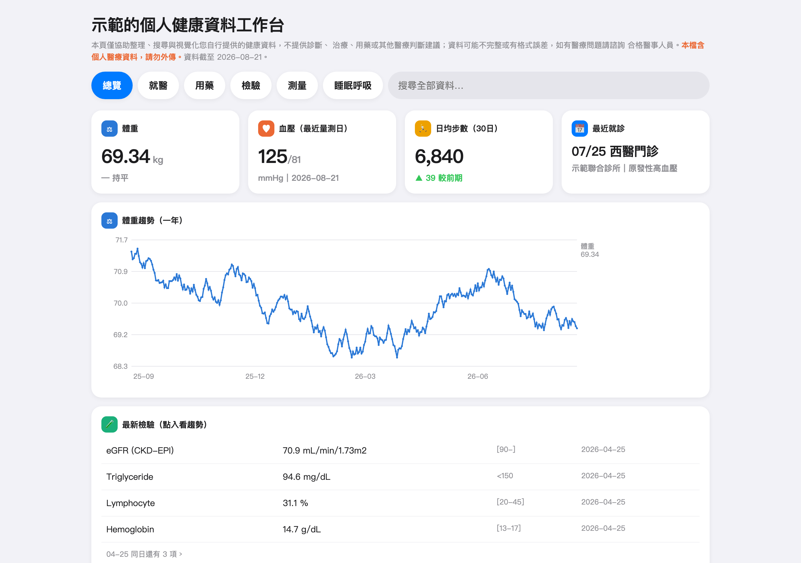
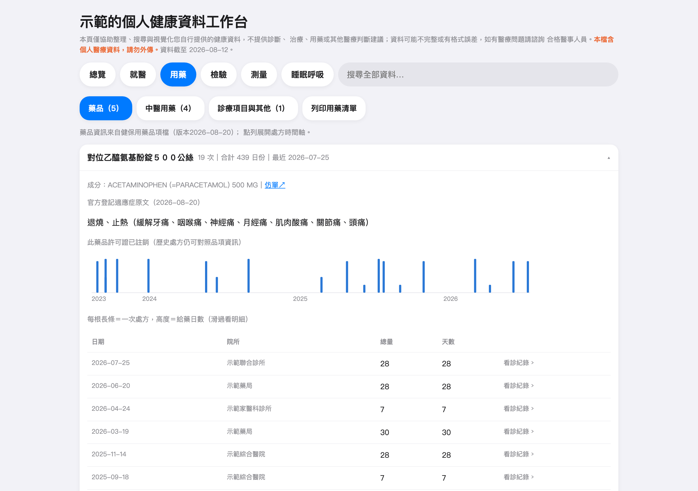
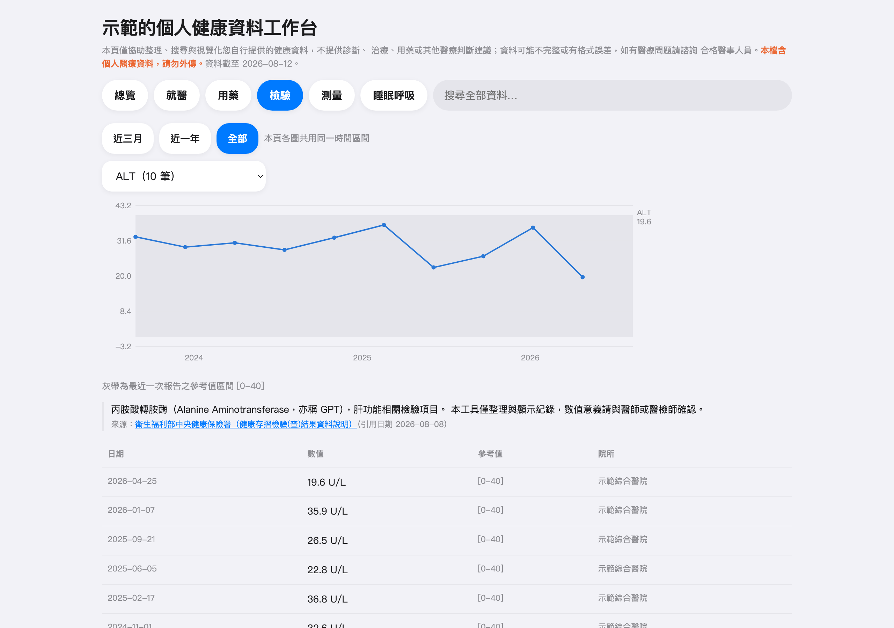
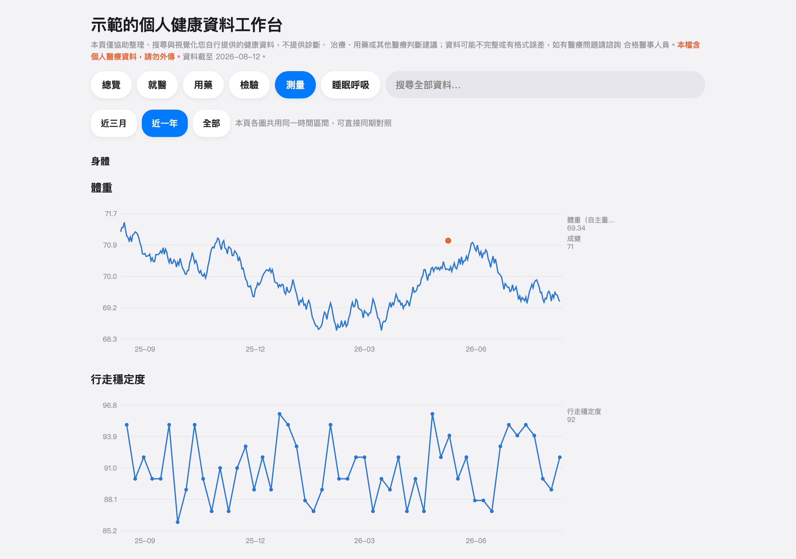

HealthWorkbench
個人健康資料工作台
把健保「健康存摺」、Apple 健康與 CPAP 呼吸器的下載檔，
變成一份越養越深、可搜尋、可帶去回診討論的家庭健康紀錄。
全程在你自己的電腦上運作，資料不上傳、不註冊、不追蹤。
macOS／Windows 桌面程式 · 完全免費 · 開放原始碼（MIT 授權）· 檢視時不需要網路
這是什麼？
健保署的「健康存摺」只查得到最近三年的就醫與用藥紀錄，Apple 健康的 匯出檔又大又難讀，CPAP 呼吸器的資料則鎖在一張 SD 卡裡。HealthWorkbench 把這些來源整理進同一個本機資料庫：每隔一陣子把新下載的檔案拖進來， 三年的滾動視窗就被接成不斷加深的個人縱深，重複的部分自動跳過， 不會越匯越亂。
打開程式就是完整的健康儀表板：總覽、就醫、用藥、檢驗、測量、睡眠呼吸 六個分頁，還有全文搜尋。要給家人或帶去診間，可以匯出成單一 HTML 檔或 EPUB 電子書，收到的人不必安裝任何程式就能看。
安裝說明
macOS
打開下載的 .dmg，把 App 拖進「應用程式」。程式已經過
Apple 簽章與公證，首次開啟時系統會問一次「確定要打開從網路下載的
App 嗎」，按「打開」就進去了（這是 macOS 對所有下載程式的標準一次性
確認，不是錯誤）。
Windows
執行下載的 .exe 安裝程式。若出現藍色的 SmartScreen
視窗，點「其他資訊」→「仍要執行」（安裝檔尚未購買憑證簽章，這是
Windows 對它的標準提示）。
快速上手（三步）
- 下載自己的資料
健保：登入健康存摺（myhealthbank.nhi.gov.tw）→ 下載「醫療類」資料 （建議 JSON）。
Apple：iPhone「健康」App → 右上角個人頭像 → 匯出所有健康資料 → 把匯出檔傳到電腦。
CPAP（ResMed）：把呼吸器的 SD 卡插進讀卡機，整張卡複製到電腦。 - 拖進程式
選擇這份資料屬於哪位家庭成員 → 開始匯入。格式自動判別、重複自動 跳過，同一份檔案匯幾次都不會亂。 - 看與分享
「資料檢視」分頁直接看；要給家人或帶去診間，匯出成 HTML（電腦用 瀏覽器開）或 EPUB（手機、平板用 Apple Books 開）。
畫面
程式內分成六個分頁：總覽、就醫、用藥、檢驗、測量、睡眠呼吸。 以下截圖全部使用合成的示範資料，人名、院所、診斷皆為虛構。




另外兩個分頁是就醫（跨院所、跨年度的就醫歷史，展開單筆 可看診斷、用藥與仿單連結）與睡眠呼吸（每晚 AHI、使用時數、睡眠時數與 各睡眠階段）。
核心特色
- 資料留在自己家：不註冊、不上傳、不追蹤，檢視過程零網路請求
- 突破三年視窗：健康存摺只保留最近三年，逐次匯入就能無限期累積
- 全家一台電腦：多位成員各自管理，一鍵切換，匯錯人救得回來
- 以藥品為核心的視角：長期用藥的斷續與劑量變化一目瞭然， 用藥卡可展開官方登記適應症原文
- 睡眠呼吸與體重可同期對照：CPAP 每晚數據與體重共用同一條時間軸
- 帶得走的一份檔案：匯出 HTML 或 EPUB，互動保留，對方免安裝
常見問題
需要註冊 GitHub 或任何帳號嗎？
不用。點上面的下載按鈕就會直接下載安裝檔；使用程式的過程也完全 不需要帳號。GitHub 只是我們存放程式碼與安裝檔的地方，就像一個檔案 倉庫，訪客下載不需要登入。
免費嗎？之後會收費嗎？
完全免費，而且開放原始碼（MIT 授權）。它是為了自己與家人的需要 而做的工具，沒有商業模式，也沒有任何內購或訂閱。
我的健康資料會被傳到哪裡嗎？
不會。資料只存在你電腦裡的程式資料夾，程式檢視過程零網路請求 （只有點擊藥品仿單這類外部連結時才會開瀏覽器）。想清空一切，刪掉 那個資料夾就結束了。
手機可以看嗎？
程式本身裝在電腦上，但可以把資料匯出成 EPUB 電子書，用 iPhone、 iPad 的「書籍」（Apple Books）打開，字級可調、圖表照樣能互動。 Android 實測可用 Reasily 閱讀器。
macOS 說「無法打開」或 Windows 跳出藍色警告？
macOS：程式已簽章公證，正常情況按「打開」即可；若用的是很舊的
版本（v0.5.0 以前），按住 Control 點程式圖示 →「開啟」。
Windows：SmartScreen 視窗點「其他資訊」→「仍要執行」。這兩個都是
系統對下載程式的標準提示，不是程式有問題。
支援哪些 CPAP 呼吸器？
目前只有 ResMed S9 AutoSet 經過實機驗證。ResMed 較新機型 （S10、AirSense）格式理論上相同但未實測；Philips 等其他廠牌目前 不支援。匯不進來的話歡迎到 GitHub 回報（注意：不要把記錄卡檔案 上傳到回報頁，那裡面是你的健康資料）。
遇到問題怎麼回報？
到 GitHub 的 Issues 頁留言（這個需要免費註冊一個 GitHub 帳號），描述你看到 的畫面訊息即可。請不要把匯出檔或健康資料附上去。